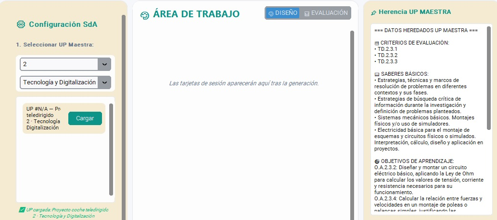
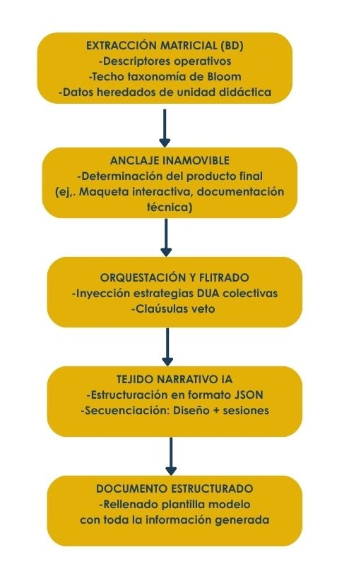
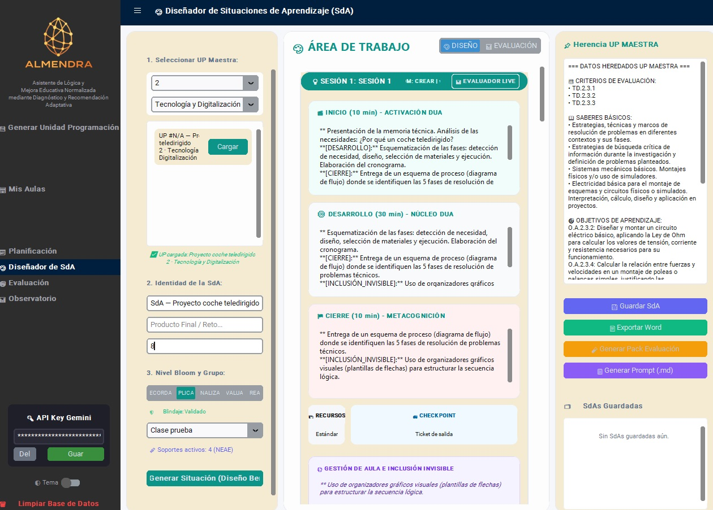

Motor de generación de situaciones de aprendizaje (Sda)
El desarrollo de situaciones de aprendizaje (SdA) en el ecosistema ALMENDRA se articula como un proceso híbrido altamente parametrizado. Su arquitectura metodológica divide de forma estricta la construcción del escenario en dos dimensiones interconectadas: la definición del diseño pedagógico Estructural (el núcleo conceptual de la SdA, establecido en la unidad didáctica) y la secuenciación didáctica (la planificación analítica de las sesiones). El sistema opera combinando las restricciones axiomáticas de la base de datos relacional local con el modelado narrativo de la inteligencia artificial.

Flujo de generación y mecánica de control
La conceptualización de una SdA se aleja por completo de la generación libre de los modelos lingüísticos. El software actúa como un orquestador lógico a través de la ejecución coordinada de las varias funciones.
El flujo metodológico establece en primera instancia un anclaje inamovible, el producto final evaluable exigido por la norma curricular, para posteriormente delegar en el motor de inteligencia artificial la redacción del tejido narrativo, metodológico y realista del entorno de aprendizaje, asegurando de forma determinista el cumplimiento de las pautas de accesibilidad (DUA) y la viabilidad material.

Extracción de restricciones y anclajes desde la capa relacional
Para mitigar la aparición de alucinaciones pedagógicas y desvíos técnicos, la base de datos local interviene fijando las variables críticas del diseño instruccional. Esta ingesta determinista se gestiona mediante el aislamiento de dos vectores principales:
- Producto Final Curricularizado: Determinado formalmente mediante una función interna. El algoritmo analiza los descriptores operativos seleccionados para la unidad, consulta la tabla de correspondencias para su identificación y cruza algebraicamente la variable con el techo cognitivo dictado por la Taxonomía de Bloom (ej., discriminando la complejidad procedimental entre "aplicar" y "crear"). El resultado es la imposición obligatoria de una tipología de producto final (ej., "Maqueta interactiva", "Debate académico" o "Documentación técnica") que el modelo generativo debe acatar de forma estricta como núcleo de la SdA.
- Contexto Analítico del Aula: Extracción de las directrices cualitativas definidas por el docente (hilo conductor de la unidad), los saberes básicos implicados, los objetivos didácticos precalculados y las Estrategias DUA específicas derivadas del perfilado estadístico del alumnado con necesidades de apoyo educativo (NEAE / ACNEAE).
Parametrización semántica y estructuración de salida
Sometido a las restricciones de contención de la base de datos, el modelo de inteligencia artifical procesa la información para estructurar los componentes de la Situación de Aprendizaje en dos fases de desarrollo técnico:
- Diseño Estructural del Cascarón (Esquema JSON): Construcción de la justificación sintáctica, el escenario vital adaptado al hilo conductor conceptual (contextualización), el desafío central estructurado como un reto y la selección inequívoca de la metodología activa idónea. Esta información se devuelve bajo una sintaxis JSON de alta fidelidad para asegurar su perfecta integración en el flujo del programa.
- Secuenciación de Sesiones: Planificación detallada del desarrollo cronológico de cada sesión de trabajo, integrando transversalmente las pautas DUA extraídas del perfil del grupo y blindando el enfoque competencial del proceso de enseñanza-aprendizaje.
Muestra interfaz pantalla tras generación de situación de aprendizaje (SdA)
Protocolos de contención, prompts dinámicos y cláusulas de veto
El control del comportamiento de la inteligencia artificial se refuerza mediante la adición de un prompt dinámico de restricción que se anexa al System prompt base.
Este componente implementa dos capas críticas de seguridad:
- Cláusula de Veto de Hardware Crítico: Si el motor de ALMENDRA detecta que la materia objeto de diseño pertenece al ámbito de las Humanidades o las Ciencias Sociales, introduce una instrucción de exclusión taxativa. Se prohíbe formalmente al modelo la inclusión de tecnologías de alto coste o infraestructuras inviables para contextos no técnicos (ej., "Micro:bitW, "Arduino", "Impresoras 3D" o "Gafas de Realidad Virtual"), obligándole a vertebrar la SdA sobre recursos materiales estandarizados y accesibles (ej., herramientas bibliográficas, lienzos analógicos o plataformas de diseño gráfico estándar).
- Fase de Sanitización de Cadenas (Post-processing): En caso de registrarse una desviación o desobediencia por parte de la IA, la función de control intercepta proactivamente el flujo de texto antes de su persistencia en la interfaz de usuario, aplicando expresiones regulares que sustituyen a la fuerza cualquier término tecnológico restringido por la cadena normalizada "recursos analógicos y bibliográficos", consolidando el valor diferencial de la personalización y actualización "a la carta" del software.